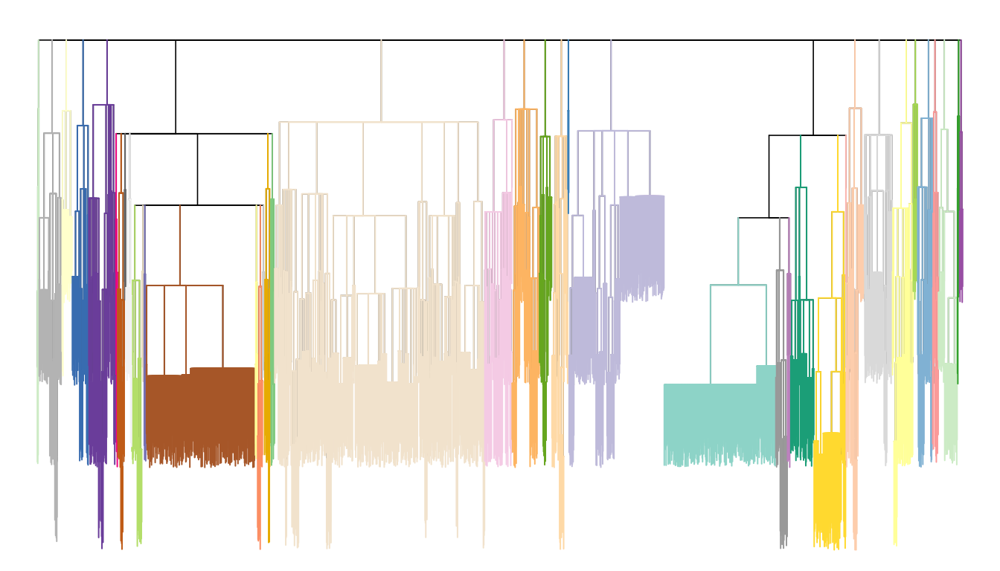

my-vignette.RmdThe hat package implements a hierarchical aggregation testing algorithm, as described in the paper “Controlling the False Split Rate in Tree-Based Aggregation”. The package implements a hierarchical testing function that determines how to aggregate leaves with while controlling the false split rate (FSR), an error measure defined in the above paper. There are two primary use cases considered in the paper:
aggregating observations with the same means and
aggregating features with the same coefficients in linear regression.
We provide examples of these two use cases and then demonstrate a more general example of the hierarchical aggregation procedure.
This section is an example of using the package to achieve aggregation of observations based on their means. We calculate volatility of daily stocks price data that are derived from the US Stock Database ©2021 Center for Research in Security Prices (CRSP), The University of Chicago Booth School of Business CRSP Stocks (2021).
The tree structure is constructed based on the North American Industry Classification System (NAICS), an industry classification system that employs a six digit code: the first two digits designate the largest sector; the third, fourth, fifth and sixth digits designate the subsector, industry group, industry, and national industry, respectively.
One can load the volatility data and pre-trained tree structure into our environment:
colnames(stocks_volatility)
#> [1] "ID" "name" "volatility"The stocks_volatility data set contains 2538 stocks’ corresponding company names and the volatility during the 5-year period.
The distribution of volatility is right-skewed. Therefore, in our analysis, we will take the logarithm to reduce skew.
The tree structure is saved in stocks_tree, which is formed according to the NAICS hierarchy. We can look at the tree structure by using the function plot_tree(). However, we omit this for now because we will see the tree again very soon.
The idea of aggregation is based on the fact that some companies might share the same mean volatility of stock if they are “similar enough” in the tree. We assume a model
\[ y_i = \theta_{k(i)} + \epsilon_i, \ \ \ k(i)\in\{1,...,K\}, i\in \{1, ..., p\}, \]
where, in the stocks example, \(y_i\) is the volatility of the \(i\)-th stock. We will use the tree as a guide as it describes the similarity among companies and therefore helps narrow down reasonable aggregations to consider.
Our algorithm achieves aggregation in two main steps:
Generate a p-value by an ANOVA test for each interior node.
Use the hierarchical aggregation testing procedure to sequentially go down the tree in a fashion that will control the FSR of the overall aggregation of leaves that is produced.
The function aggregate_observations performs both of these steps:
result = aggregate_observations(y = log(stocks_volatility$volatility),
sigma = NULL,
tree = stocks_tree,
alpha = 0.4)
#> [1] "Nodes 3240 at level 1 are rejected."
#> [1] "Now moving to depth 2"
#> [1] "The rejected nodes in level 2 are 3222"
#> [2] "The rejected nodes in level 2 are 3230"
#> [1] "The critical function at nodes in level 2 are 5.32976776663965e-05"
#> [2] "The critical function at nodes in level 2 are 0.000369699764130401"
#> [3] "The critical function at nodes in level 2 are 0.000487293052949911"
#> [4] "The critical function at nodes in level 2 are 6.34496162695196e-05"
#> [5] "The critical function at nodes in level 2 are 2.87638260421822e-05"
#> [6] "The critical function at nodes in level 2 are 3.72237748781182e-05"
#> [7] "The critical function at nodes in level 2 are 2.53798465078079e-06"
#> [8] "The critical function at nodes in level 2 are 0.000220804664617928"
#> [9] "The critical function at nodes in level 2 are 0.000422151446913204"
#> [10] "The critical function at nodes in level 2 are 6.51416060367068e-05"
#> [11] "The critical function at nodes in level 2 are 4.82217083648349e-05"
#> [12] "The critical function at nodes in level 2 are 1.01519386031231e-05"
#> [13] "The critical function at nodes in level 2 are 1.35359181374975e-05"
#> [14] "The critical function at nodes in level 2 are 7.61395395234236e-06"
#> [1] "Now moving to depth 3"
#> [1] "The rejected nodes in level 3 are 3161"
#> [2] "The rejected nodes in level 3 are 3200"
#> [1] "The critical function at nodes in level 3 are 4.85296943089359e-06"
#> [2] "The critical function at nodes in level 3 are 3.23531295392906e-06"
#> [3] "The critical function at nodes in level 3 are 1.29412518157163e-05"
#> [4] "The critical function at nodes in level 3 are 0.000294413478807545"
#> [5] "The critical function at nodes in level 3 are 8.89711062330492e-06"
#> [6] "The critical function at nodes in level 3 are 0.000280663398753346"
#> [7] "The critical function at nodes in level 3 are 5.1765007262865e-05"
#> [1] "Now moving to depth 4"
#> [1] "Now moving to depth 5"
#> [1] "Stop moving to next level because no nodes at depth 5 are rejected."sigma: standard deviation of noise \(\epsilon\)’s, if known. If sigma is non-NULL, then a chi-squared null distribution is used; if sigma is NULL, then an F-test is performed.
tree: a list of length-\(|\mathcal{T}\setminus \mathcal{L}|\) that describes the tree structure. This format is a generalization of the merge matrix within an hclust object. The element hc_list[[i]] contains the children of the \(i\)-th node on the tree. A negative value indicates that the child is a leaf node while positive values are interior nodes. For example, if hc_list[[i]][j] is positive, that means that node hc_list[[i]] is a parent of node hc_list[[j]]. The object stocks_tree in our package is an example of such a structure. The function can also work with hclust objects (for binary trees) or dendrogram objects (for more general trees). The functions dend_as_hclist and hclist_as_dend allow one to switch between formats.
alpha: target FSR level.
The output result is a list that has four components: alpha is the target FSR level, groups gives the group assignments of the observations, rejections indicates if each interior node is rejected (this will come in handy for plotting the aggregation result on a tree), and p_vals gives all the p-values that were computed internally.
In this example, the achieved aggregation result contains 40 groups. We plot the achieved aggregation on the tree using the function plot_aggregation (a bit busy as since are >2k stocks…).
plot_aggregation(rejections = result$rejections, tree = stocks_tree)
For this application, we will synthetize data for feature aggregating. We randomly generate a tree with 50 leaves by hierarchical clustering, and cut the tree into 10 disjoint groups. Then we simulate 10 coefficient values corresponding to the 10 groups. To mimick the scenario of rare features (Yan and Bien (2020)), we generate a design matrix \(X\) by a Gaussian-Bernoulli distribution. Finally, we build a linear model with gaussian noise as the response vector \(y\).
To perform aggregation, we can use the function aggregate_features. The input requires
y: response vector.
X: design matrix.
hc: an object that describes the tree structure. Since here we have a binary tree, we use a tree = hclust object. Alternatively, one can also use tree = dendrogram or tree = hc_list if they have a non-binary tree that is saved in the format of ‘dendrogram’ or ‘hc_list’.
alpha: target FSR level.
agg_result = aggregate_features(y = y, X = X,
tree = hc, alpha = 0.2)
#> Finished model fits for alpha[1].
#> Finished model fits for alpha[2].
#> Finished model fits for alpha[3].
#> Finished model fits for alpha[4].
#> Finished model fits for alpha[5].
#> Finished model fits for alpha[1].
#> Finished model fits for alpha[2].
#> Finished model fits for alpha[3].
#> Finished model fits for alpha[4].
#> Finished model fits for alpha[5].
#> ##########################
#> Finished model fits for fold[1].
#> ##########################
#> Finished model fits for alpha[1].
#> Finished model fits for alpha[2].
#> Finished model fits for alpha[3].
#> Finished model fits for alpha[4].
#> Finished model fits for alpha[5].
#> ##########################
#> Finished model fits for fold[2].
#> ##########################
#> Finished model fits for alpha[1].
#> Finished model fits for alpha[2].
#> Finished model fits for alpha[3].
#> Finished model fits for alpha[4].
#> Finished model fits for alpha[5].
#> ##########################
#> Finished model fits for fold[3].
#> ##########################
#> Finished model fits for alpha[1].
#> Finished model fits for alpha[2].
#> Finished model fits for alpha[3].
#> Finished model fits for alpha[4].
#> Finished model fits for alpha[5].
#> ##########################
#> Finished model fits for fold[4].
#> ##########################
#> Finished model fits for alpha[1].
#> Finished model fits for alpha[2].
#> Finished model fits for alpha[3].
#> Finished model fits for alpha[4].
#> Finished model fits for alpha[5].
#> ##########################
#> Finished model fits for fold[5].
#> ##########################
#> [1] "Nodes 99 at level 1 are rejected."
#> [1] "Now moving to depth 2"
#> [1] "The rejected nodes in level 2 are 78"
#> [1] "The critical function at nodes in level 2 are 0.0331428571428572"
#> [2] "The critical function at nodes in level 2 are 0.024"
#> [1] "Now moving to depth 3"
#> [1] "The rejected nodes in level 3 are 69"
#> [1] "The critical function at nodes in level 3 are 0.0200626959247649"
#> [2] "The critical function at nodes in level 3 are 0.0090282131661442"
#> [1] "Now moving to depth 4"
#> [1] "Now moving to depth 5"
#> [1] "Stop moving to next level because no nodes at depth 5 are rejected."For calculating FSP we can use
calculate_fsp(theta_est = agg_result$groups, theta_true = groups)
#> [1] 0The functions aggregate_observations and aggregate_features shown above both make use of the hierarchical aggregation testing framework introduced in the paper “Controlling the False Split Rate in Tree-Based Aggregation”. Internally, both functions call a more general function called hierarchical_testing. If a user has a different way to construct nodewise p-values for aggregation, then the user should use hierarchical_testing as shown here.
This function takes a length-num_interior_node vector of p-values.
Here is a small example:
set.seed(123)
n <- 20
hc <- hclust(dist(runif(n)))
de <- as.dendrogram(hc)
hc_list <- dend_as_hclist(de)
compute_my_pvalue <- function(u) {
# Example of a customized pvalue function:
# u an element of hc_list
# compute something more interesting than just runif here.
# If has leaf as a child, not reject; otherwise reject.
ifelse(any(hc_list[[u]]<0), 1, 0)
}
result_small <- hierarchical_test(tree = hc_list,
p_vals = sapply(1:length(hc_list), compute_my_pvalue),
alpha = 0.4,
independent = FALSE)
#> [1] "Nodes 39 at level 1 are rejected."
#> [1] "Now moving to depth 2"
#> [1] "The rejected nodes in level 2 are 31"
#> [2] "The rejected nodes in level 2 are 38"
#> [1] "The critical function at nodes in level 2 are 0.192"
#> [2] "The critical function at nodes in level 2 are 0.128"
#> [1] "Now moving to depth 3"
#> [1] "The rejected nodes in level 3 are 25"
#> [2] "The rejected nodes in level 3 are 30"
#> [3] "The rejected nodes in level 3 are 37"
#> [1] "The critical function at nodes in level 3 are 0.105329153605016"
#> [2] "The critical function at nodes in level 3 are 0.105329153605016"
#> [3] "The critical function at nodes in level 3 are 0.105329153605016"
#> [1] "Now moving to depth 4"
#> [1] "Stop moving to next level because no nodes at depth 4 are rejected."
plot_aggregation(rejections = result_small$rejections, tree = hc_list)CRSP Stocks. 2021.
Yan, Xiaohan, and Jacob Bien. 2020. “Rare Feature Selection in High Dimensions.” Journal of the American Statistical Association 0 (0): 1–14. https://doi.org/10.1080/01621459.2020.1796677.